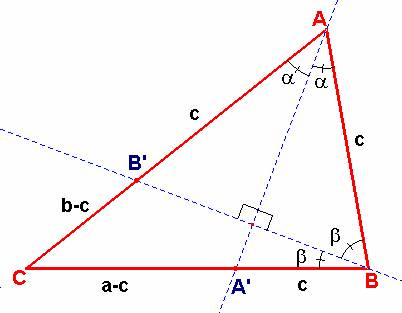

Problema 269
Para el aula
Ejemplos de problemas que plantean tareas
ricas ¿Podrías construir un triángulo con sus dos bisectrices
perpendiculares?
Vila, A., Callejo, M,L.
(2004): Matemáticas para aprender a pensar Narcea (pág 136),
Con permiso de los autores, a quines el director agradece la gentileza.
Solución
de F. Damián Aranda Ballesteros, profesor del IES Blas Infante de Córdoba,
España.
Supongamos que fuese posible construir un triángulo con dos
de sus bisectrices perpendiculares. Sean para ello, las bisectrices va
y vb correspondientes a los ángulos A y B,
respectivamente.
Según esto se daría la
siguiente situación reflejada en este gráfico:
|
 |
|
Con estas consideraciones resultaría que, por el teorema de la
bisectriz, y, por tanto, no se
verificaría la desigualdad triangular. En consecuencia, no se podría construir
un |